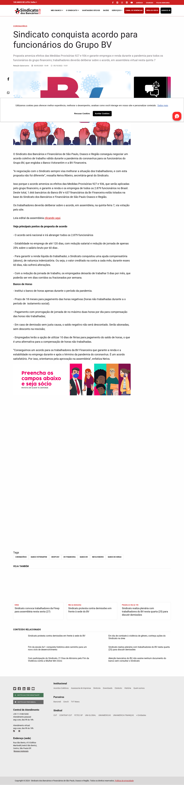

Sistema de Investigação de Marca e Identidade Online
https://spbancarios.com.br/05/2020/sindicato-conquista-acordo-para-funcionarios-do-grupo-bv
Prioridade: HIGH · Cenário: B_AMBIGUOUS_COMMUNICATION · Revisão humana: PENDING
Página fora do escopo da auditoria de correspondentes bancários (Resolução CMN nº 4.935/2021). Trata-se de artigo informativo/notícia de entidade sindical (Sindicato dos Bancários de SP) a respeito de negociações trabalhistas e acordos coletivos para funcionários do Banco BV e BV Financeira. Não há comercialização de produtos ou risco de confusão de marca ao consumidor. [Revisor: DOWNGRADE] Trata-se de portal de entidade sindical publicando notícia sobre negociação trabalhista dos funcionários do Grupo BV. O site não atua como correspondente bancário nem comercializa produtos financeiros. Conforme as diretrizes de triagem, portais editoriais/noticiosos devem receber downgrade para NO_INDICATION com prioridade LOW.

| Ref | Tipo | Local | Conteúdo |
|---|---|---|---|
| E-URL | domain | url | URL final: https://spbancarios.com.br/05/2020/sindicato-conquista-acordo-para-funcionarios-do-grupo-bv (domínio: spbancarios.com.br) |
| E-DISC-001 | text | search_index | Índice de busca (lens): Sindicato conquista acordo para funcionários do Grupo BV — Imagem visualmente semelhante ao logotipo antigo (fonte: Sindicato dos Bancários) |
| E-SHOT-VIEWPORT | screenshot | viewport | evidence/Cf12c92bed2/attempt-2/viewport.png (sha256 bd23f4b1c818e8de…) |
| E-SHOT-FULL | screenshot | page | evidence/Cf12c92bed2/attempt-2/fullpage.png (sha256 9c06a89e0156a558…) |
| E-TITLE | title | head | Sindicato conquista acordo para funcionários do Grupo BV |
| E-META-1 | meta | head | description: O Sindicato dos Bancários de São Paulo conseguiu um acordo coletivo de trabalho válido durante a pandemia do coronavírus para os funcionários do Grupo BV, que engloba o Banco Votorantim e a BV Financeira. |
| E-META-2 | meta | head | og:site_name: Sindicato dos Bancários de SP |
| E-META-3 | meta | head | og:title: Sindicato conquista acordo para funcionários do Grupo BV |
| E-META-4 | meta | head | og:description: O Sindicato dos Bancários e Financiários de São Paulo, Osasco e Região conseguiu negociar um acordo coletivo de trabalho válido durante a pandemia do coronavírus para os funcionários do Grupo BV, que engloba o Banco Votorantim e a BV Financeira. “A negociação com o Sindicato sempre visa melhorar a situação dos trabalhadores, e com esta proposta não foi diferente”, ressalta Neiva Ribeiro, secretária-geral do Sindicato. |
| E-CANONICAL | meta | head | https://spbancarios.com.br/05/2020/sindicato-conquista-acordo-para-funcionarios-do-grupo-bv |
| E-HEAD-1 | heading | page | MAIN NAVIGATION |
| E-HEAD-2 | heading | page | Sindicato conquista acordo para funcionários do Grupo BV |
| E-HEAD-3 | heading | page | Banco de Horas |
| E-HEAD-4 | heading | page | VEJA TAMBÉM |
| E-HEAD-5 | heading | page | Sindicato convoca trabalhadores da Finep para assembleia nesta sexta (27) |
| E-HEAD-6 | heading | page | Sindicato protesta contra demissões em frente à sede do BV |
| E-HEAD-7 | heading | page | Sindicato realiza plenária com trabalhadores do BV nesta quarta (25) para discutir demissões |
| E-HEAD-8 | heading | page | CONTEÚDO RELACIONADO |
| E-HEAD-9 | heading | page | Central de Atendimento |
| E-HEAD-10 | heading | page | Endereço (sede) |
| E-HEAD-11 | heading | page | Institucional |
| E-HEAD-12 | heading | page | Parceiros |
| E-HEAD-13 | heading | page | Sindical |
| E-HDR | text | header | 100 ANOS DE LUTA: Saiba + JURÍDICO CHARGES FOLHA BANCARIA MAIN NAVIGATION MEU BANCO O SINDICATO VANTAGENS SÓCIOS SAÚDE SERVIÇOS CANAL DE DENÚNCIAS ÁREA DO SÓCIO ASSOCIE-SE |
| E-FOLD | text | viewport (acima da dobra) | Saiba mais Recusar Cookies Aceitar Cookies Pular para o conteúdo principal 100 ANOS DE LUTA : Saiba + Jurídico Charges Folha Bancaria Main navigation Meu Banco O Sindicato Vantagens Sócios Saúde Serviços Canal de Denúncias área do sócio Associe-se Chapéu Coronavírus Sindicato conquista acordo para funcionários do Grupo BV Linha fina Proposta ameniza efeitos das Medidas Provisórias 927 e 936 e garante empregos e renda durante a pandemia para todos os funcionários do grupo financeiro; trabalhadores deverão deliberar sobre o acordo, em assembleia virtual nesta quinta 7 Redação Spbancarios 05/05/2020 - 10:49 05/10/2022 - 15:01 Opens in a new window Opens in a new window Opens in a new window Opens in a new window Imagem Destaque |
| E-FTR | text | footer | NOTÍCIAS POR WHATSAPP NOTÍCIAS POR EMAIL Central de Atendimento +55 11 3188-5200 Atendimento pessoal: seg a sex, das 9h às 18h. Atendimento virtual: seg a sex, das 9h às 18h. Endereço (sede) Rua São Bento, 413 Edifício Martinelli (metrô São Bento), Centro, São Paulo/SP. Nossas regionais Institucional Acordos Coletivos Assessoria de Imprensa Diretoria Downloads Estatuto História Quem somos Parceiros Bancredi Cine B TVT News Sindical CUT CONTRAF-CUT FETEC-SP UNI-GLOBAL UNIAMERICAS UNIAMERICA FINANÇAS + Entidades Copyright © 2024 - Sindicato dos Bancários e Financiários de São Paulo, Osasco e Região. Todos os direitos reservados. Política de privacidade |
| E-NAV | nav | header | 100 ANOS DE LUTA: Saiba + <https://100anos.spbancarios.com.br/> | link para a página do Sindicato no facebook <https://www.facebook.com/SPBancarios> | link para a página do Sindicato no Twitter <https://twitter.com/spbancarios> | link para a página do Sindicato no Instagram <https://www.instagram.com/spbancarios/> | link para a página do Sindicato no Linkedin <https://www.linkedin.com/company/sindicato-dos-banc%C3%A1rios-de-s%C3%A3o-paulos-osasco-e-regi%C3%A3o> | link para a página do Sindicato no Youtube <https://www.youtube.com/user/spbancarios> | JURÍDICO <https://spbancarios.com.br/juridico> | CHARGES <https://spbancarios.com.br/charges> | FOLHA BANCARIA <https://spbancarios.com.br/folhabancaria> | Início <https://spbancarios.com.br/> | VANTAGENS SÓCIOS <https://spbancarios.com.br/sejasocio> | SAÚDE <https://spbancarios.com.br/saude> | CANAL DE DENÚNCIAS <https://spbancarios.com.br/canal-de-denuncias> | ÁREA DO SÓCIO <https://socio.spbancarios.com.br/> | ASSOCIE-SE <https://lp.spbancarios.com.br/saiba-mais/> |
| E-CTA-1 | cta | page | Saiba mais <https://spbancarios.com.br/politica-de-privacidade> |
| E-CTA-2 | cta | page | Recusar Cookies |
| E-CTA-3 | cta | page | Aceitar Cookies |
| E-CTA-4 | cta | header | MEU BANCO |
| E-CTA-5 | cta | header | O SINDICATO |
| E-CTA-6 | cta | header | SERVIÇOS |
| E-CTA-7 | cta | header | CANAL DE DENÚNCIAS <https://spbancarios.com.br/canal-de-denuncias> |
| E-CTA-8 | cta | header | ÁREA DO SÓCIO <https://socio.spbancarios.com.br/> |
| E-CTA-9 | cta | header | ASSOCIE-SE <https://lp.spbancarios.com.br/saiba-mais/> |
| E-CTA-10 | cta | page | Opens in a new window <https://www.facebook.com/sharer/sharer.php?u=https://spbancarios.com.br/05/2020/sindicato-conquista-acordo-para-funcionarios-do-grupo-bv&title=Sindicato%20conquista%20acordo%20para%20funcion%C3%A1rios%20do%20Grupo%20BV> |
| E-CTA-11 | cta | page | Opens in a new window <https://twitter.com/intent/tweet?text=Sindicato%20conquista%20acordo%20para%20funcion%C3%A1rios%20do%20Grupo%20BV+https://spbancarios.com.br/05/2020/sindicato-conquista-acordo-para-funcionarios-do-grupo-bv> |
| E-CTA-12 | cta | page | Opens in a new window <https://wa.me/?text=https://spbancarios.com.br/05/2020/sindicato-conquista-acordo-para-funcionarios-do-grupo-bv> |
| E-CTA-13 | cta | page | Opens in a new window <https://www.linkedin.com/sharing/share-offsite/?url=https://spbancarios.com.br/05/2020/sindicato-conquista-acordo-para-funcionarios-do-grupo-bv> |
| E-CTA-14 | cta | footer | NOTÍCIAS POR WHATSAPP <https://api.whatsapp.com/send?phone=5511910244938&text=Ol%C3%A1!%20Gostaria%20de%20falar%20sobre%20...> |
| E-CTA-15 | cta | footer | NOTÍCIAS POR EMAIL <https://materiais.spbancarios.com.br/cadastro> |
| E-CONTACT-1 | contact | header | link para a página do Sindicato no facebook <https://www.facebook.com/SPBancarios> |
| E-CONTACT-2 | contact | header | link para a página do Sindicato no Instagram <https://www.instagram.com/spbancarios/> |
| E-CONTACT-3 | contact | page | Opens in a new window <https://www.facebook.com/sharer/sharer.php?u=https://spbancarios.com.br/05/2020/sindicato-conquista-acordo-para-funcionarios-do-grupo-bv&title=Sindicato%20conquista%20acordo%20para%20funcion%C3%A1rios%20do%20Grupo%20BV> |
| E-CONTACT-4 | contact | page | Opens in a new window <https://wa.me/?text=https://spbancarios.com.br/05/2020/sindicato-conquista-acordo-para-funcionarios-do-grupo-bv> |
| E-CONTACT-5 | contact | page | Opens in a new window <https://www.facebook.com/sharer/sharer.php?u=https://spbancarios.com.br/05/2020/sindicato-conquista-acordo-para-funcionarios-do-grupo-bv&title=Sindicato%20conquista%20acordo%20para%20funcion%C3%A1rios%20do%20Grupo%20BV> |
| E-CONTACT-6 | contact | page | Opens in a new window <https://wa.me/?text=https://spbancarios.com.br/05/2020/sindicato-conquista-acordo-para-funcionarios-do-grupo-bv> |
| E-CONTACT-7 | contact | footer | <https://www.facebook.com/spbancarios/> |
| E-CONTACT-8 | contact | footer | <https://www.instagram.com/spbancarios/> |
| E-CONTACT-9 | contact | footer | NOTÍCIAS POR WHATSAPP <https://api.whatsapp.com/send?phone=5511910244938&text=Ol%C3%A1!%20Gostaria%20de%20falar%20sobre%20...> |
| E-CONTACT-10 | contact | footer | <tel:01131885200> |
| E-IMG-1 | image | header (acima da dobra) | imagem alt='Início' src=https://spbancarios.com.br/sites/default/files/logo-nova-sindicato_0.png (200x49, acima da dobra) |
| E-IMG-2 | image | page (acima da dobra) | imagem alt='Montagem: Linton Publio' src=https://spbancarios.com.br/sites/default/files/styles/interna_grande/public/destaques/bv_financeira.png?itok=-fdirwxx (872x545, acima da dobra) |
| E-IMG-3 | image | page | imagem alt='Com faixas e cartazes, dirigentes do Sindicato protestam em frente à sede do BV' src=https://spbancarios.com.br/sites/default/files/styles/medium/public/destaques/2026-11/WhatsApp%20Image%202026-11-24%20at%2018.18.51.jpeg.webp?itok=Zh_sA3n- (374x234, abaixo da dobra) |
| E-IMG-4 | image | page | imagem alt='Sindicato realiza plenária com trabalhadores do BV nesta quarta (25) para discutir demissões' src=https://spbancarios.com.br/sites/default/files/styles/medium/public/destaques/2026-11/reuni%C3%A3o-virtual-bv.jpg.webp?itok=SstNNv9r (374x234, abaixo da dobra) |
| E-IMG-5 | image | page | imagem alt='Com faixas e cartazes, dirigentes do Sindicato protestam em frente à sede do BV' src=https://spbancarios.com.br/sites/default/files/styles/seeb_thumb/public/destaques/2026-11/WhatsApp%20Image%202026-11-24%20at%2018.18.51.jpeg.webp?itok=myEknU5N (100x63, abaixo da dobra) |
| E-IMG-6 | image | page | imagem alt='Sindicato realiza plenária com trabalhadores do BV nesta quarta (25) para discutir demissões' src=https://spbancarios.com.br/sites/default/files/styles/seeb_thumb/public/destaques/2026-11/reuni%C3%A3o-virtual-bv.jpg.webp?itok=fc__oz4l (100x63, abaixo da dobra) |
| E-IMG-7 | image | page | imagem alt='Placa onde se lê: BV, respeite os trabalhadores!' src=https://spbancarios.com.br/sites/default/files/styles/seeb_thumb/public/destaques/2026-11/BV.jpeg.webp?itok=cZq_3HYw (100x63, abaixo da dobra) |
| E-IMG-8 | image | footer | imagem alt='Sindicato dos bancários de SP, Osasco e Região' src=https://spbancarios.com.br/sites/default/files/logo-sindicato-dos-bancarios-sp_2.png (200x27, abaixo da dobra) |
| E-TXT-001 | text | page | MEU BANCO |
| E-TXT-002 | text | page | Sindicato conquista acordo para funcionários do Grupo BV |
| E-TXT-003 | text | page | O Sindicato dos Bancários e Financiários de São Paulo, Osasco e Região conseguiu negociar um acordo coletivo de trabalho válido durante a pandemia do coronavírus para os funcionários do Grupo BV, que engloba o Banco Votorantim e a BV Financeira. |
| E-TXT-004 | text | page | Isso porque o acordo ameniza os efeitos das Medidas Provisórias 927 e 936, que serão aplicadas pelo grupo financeiro, e garante a renda e os empregos de todos os 2.879 funcionários no Brasil. Deste total, 1.666 bancários do Banco BV e 637 financiários da Bv Financeira estão lotados na base do Sindicato dos Bancários e Financiários de São Paulo Osasco e Região. |
| E-TXT-005 | text | page | Banco de Horas |
| E-TXT-006 | text | page | - Institui o banco de horas apenas durante o período da pandemia. |
| E-TXT-007 | text | page | “Conseguimos um acordo para os trabalhadores da BV Financeira que garante a renda e a estabilidade no emprego durante e após o término da pandemia do coronavírus. É um acordo satisfatório. Por isso, orientamos pela aprovação na assembleia”, enfatiza Neiva. |
| E-TXT-008 | text | page | BANCO VOTORANTIM |
| E-TXT-009 | text | page | GRUPO BV |
| E-TXT-010 | text | page | BV FINANCEIRA |
| E-TXT-011 | text | page | BANCO BV |
| E-TXT-012 | text | page | BANCO DE HORAS |
| E-TXT-013 | text | page | Sindicato protesta contra demissões em frente à sede do BV |
| E-TXT-014 | text | page | Sindicato realiza plenária com trabalhadores do BV nesta quarta (25) para discutir demissões |
| E-TXT-015 | text | page | Sindicato protesta contra demissões em frente à sede do BV |
| E-TXT-016 | text | page | Sindicato realiza plenária com trabalhadores do BV nesta quarta (25) para discutir demissões |
| E-TXT-017 | text | page | Atenção bancários do BV, não assine nenhum documento do banco sem consultar o Sindicato |
| E-TXT-018 | text | page | NOTÍCIAS POR WHATSAPP NOTÍCIAS POR EMAIL |
| E-TXT-019 | text | page | Central de Atendimento |
| E-TXT-020 | text | page | Atendimento pessoal: |
| E-TXT-021 | text | page | Atendimento virtual: |
| E-TXT-022 | text | page | Endereço (sede) |
| E-TXT-023 | text | page | Parceiros |
| Dimensão | Sinal | Achado | Refs |
|---|---|---|---|
| DECLARED_COMMERCIAL_IDENTITY | LEGITIMATE | O portal pertence claramente ao Sindicato dos Bancários e Financiários de São Paulo, Osasco e Região (spbancarios.com.br), sem vínculo comercial ou simulação de oficialidade com o Banco BV. | E-URL E-HDR E-FTR E-META-2 |
| CORRESPONDENT_TRANSPARENCY | NEUTRAL | Não se trata de correspondente bancário, loja de veículos ou intermediador de crédito, tratando-se exclusivamente de cobertura jornalística e sindical. | E-TITLE E-TXT-003 E-TXT-004 |
| INSTITUTIONAL_LANGUAGE | NEUTRAL | O conteúdo é estritamente informativo e jornalístico, relatando acordo coletivo de trabalho para funcionários do Grupo BV durante a pandemia. | E-TITLE E-TXT-003 E-TXT-007 |
| LOGO_USAGE | NEUTRAL | A imagem de capa da matéria utiliza recorte/montagem com a marca legada para ilustrar a notícia sobre os funcionários da BV Financeira e Banco BV, sem finalidade comercial. | E-IMG-2 E-SHOT-VIEWPORT |
Página fora do escopo da auditoria de correspondentes bancários (Resolução CMN nº 4.935/2021). Trata-se de artigo informativo/notícia de entidade sindical (Sindicato dos Bancários de SP) a respeito de negociações trabalhistas e acordos coletivos para funcionários do Banco BV e BV Financeira. Não há comercialização de produtos ou risco de confusão de marca ao consumidor.
Nenhum CNPJ ou razão social identificáveis no conteúdo coletado.
| Tipo | Valor | Ref | Contexto |
|---|---|---|---|
| domain | spbancarios.com.br | E-URL | |
| social_profile | https://www.facebook.com/SPBancarios | E-NAV | |
| social_profile | https://www.instagram.com/spbancarios/ | E-NAV | |
| social_profile | https://www.linkedin.com/company/sindicato-dos-banc%C3%A1rios-de-s%C3%A3o-paulos-osasco-e-regi%C3%A3o | E-NAV | |
| social_profile | https://www.youtube.com/user/spbancarios | E-NAV | |
| social_profile | https://www.facebook.com/sharer/sharer.php?u=https://spbancarios.com.br/05/2020/sindicato-conquista-acordo-para-funcionarios-do-grupo-bv&title=Sindicato%20conquista%20acordo%20para%20funcion%C3%A1rios | E-CTA-10 | |
| social_profile | https://www.linkedin.com/sharing/share-offsite/?url=https://spbancarios.com.br/05/2020/sindicato-conquista-acordo-para-funcionarios-do-grupo-bv | E-CTA-13 | |
| social_profile | https://www.facebook.com/spbancarios/ | E-CONTACT-7 | |
| trade_name | Sindicato dos Bancários de SP | E-META-2 | |
| phone | 11 3188-5200 | E-FTR | |
| Opens in a new window <https://wa.me/?text=https://spbancarios.com.br/05/2020/sindicato-conquista-acordo-para-funcionarios-do-grupo-bv> | E-CONTACT-4 | ||
| NOTÍCIAS POR WHATSAPP <https://api.whatsapp.com/send?phone=5511910244938&text=Ol%C3%A1!%20Gostaria%20de%20falar%20sobre%20...> | E-CONTACT-9 |
Mapeamento indicativo para apoio à auditoria. Não constitui conclusão regulatória; a decisão definitiva pertence à auditoria.
Fonte: NORMATIVE
Art. 14. O contrato de correspondente deve estabelecer: [...] II - vedação à utilização, pelo contratado, de logomarca ou de outros atributos que sejam similares aos adotados pela instituição contratante em suas agências, postos de atendimento, sítio eletrônico na internet, aplicativo ou outras plataformas de comunicação em rede;
Hipótese: Uso de logomarca, uso excessivo/desproporcional ou de atributos similares aos adotados pela contratante em seus canais. A norma disciplina correspondentes contratados; o responsável não foi identificado como correspondente.
Evidência observada: E-IMG-1 E-IMG-2 E-IMG-3
Informação faltante:
Fonte: NORMATIVE
Art. 14. O contrato de correspondente deve estabelecer: [...] III - divulgação ao público, pelo contratado, de sua condição de prestador de serviços à instituição contratante, identificada pelo nome com que é conhecida no mercado, com descrição dos produtos e serviços oferecidos e canais de contato da instituição contratante, inclusive de sua ouvidoria, em local visível, em destaque e em formato legível, por meio de: a) sítio eletrônico do correspondente na internet, acessível na página inicial; b) aplicativo e outras plataformas de comunicação em rede do correspondente; [...]
Hipótese: Há declaração da condição de correspondente/prestador, mas outros elementos da página (DECLARED_COMMERCIAL_IDENTITY, CONTACT_CHANNELS) podem contradizê-la ou reduzir seu efeito (destaque, legibilidade e identificação da contratante a verificar). A norma disciplina correspondentes contratados; o responsável não foi identificado como correspondente.
Evidência observada: E-CONTACT-4 E-CONTACT-6 E-CONTACT-9 E-FOLD E-FTR E-TITLE
Informação faltante:
Fonte: NORMATIVE
Art. 3º O correspondente atua por conta e sob as diretrizes da instituição contratante, que assume inteira responsabilidade pelo atendimento prestado aos clientes e usuários por meio do contratado.
Hipótese: Atendimento ao público prestado por meio do contratado em condições que podem não seguir as diretrizes da contratante. A norma disciplina correspondentes contratados; o responsável não foi identificado como correspondente.
Evidência observada: E-CONTACT-4 E-CONTACT-6 E-CONTACT-9
Informação faltante:
Se o responsável não for correspondente contratado, os indícios podem caracterizar uso indevido de marca ou fraude, fora do escopo da Res. 4.935: avaliar encaminhamento às áreas jurídica/segurança.
Limitações: requisitos contratuais/internos não fornecidos: mapeamento limitado ao texto normativo
Decisão: DOWNGRADE → NO_INDICATION / LOW
Trata-se de portal de entidade sindical publicando notícia sobre negociação trabalhista dos funcionários do Grupo BV. O site não atua como correspondente bancário nem comercializa produtos financeiros. Conforme as diretrizes de triagem, portais editoriais/noticiosos devem receber downgrade para NO_INDICATION com prioridade LOW.
| Tema | Severidade | Questionamento | Refs |
|---|---|---|---|
| NATUREZA_DO_SITE | HIGH | O domínio spbancarios.com.br pertence ao Sindicato dos Bancários e Financiários de São Paulo, Osasco e Região. O conteúdo avaliado é uma matéria jornalística/sindical sobre acordo coletivo de trabalho para funcionários do Grupo BV, sem qualquer relação com oferta de crédito, correspondente bancário (COBAN), revenda de veículos ou energia solar. | E-URL E-TITLE E-META-2 E-META-4 E-FTR E-SHOT-FULL |
| domain_attribution | MEDIUM | Responsável pela página não identificado; a conclusão sobre a marca não pode ser atribuída a um estabelecimento específico. | E-URL |
| Fonte | Consulta / hipótese | URL original | Título / trecho |
|---|---|---|---|
| lens | https://logospng.org/wp-content/uploads/bv-financeira.png H12-legacy-logo:lens | https://spbancarios.com.br/05/2020/sindicato-conquista-acordo-para-funcionarios-do-grupo-bv | Sindicato conquista acordo para funcionários do Grupo BV Imagem visualmente semelhante ao logotipo antigo (fonte: Sindicato dos Bancários) |
Original: https://spbancarios.com.br/05/2020/sindicato-conquista-acordo-para-funcionarios-do-grupo-bv
Final: https://spbancarios.com.br/05/2020/sindicato-conquista-acordo-para-funcionarios-do-grupo-bv
| Artefato | Caminho | SHA-256 | Bytes |
|---|---|---|---|
| screenshot_viewport | evidence/Cf12c92bed2/attempt-2/viewport.png | bd23f4b1c818e8de69efcc04d28ba363ebd36a1c74b43ca41c73112dc827a553 | 149784 |
| screenshot_full | evidence/Cf12c92bed2/attempt-2/fullpage.png | 9c06a89e0156a558cfd68451f3cacdf13c55ef198ddb1251e5f1f2696dd7aa0c | 590529 |
| html | evidence/Cf12c92bed2/attempt-2/page.html.txt | 37656c92e618a4250323cef67e1ffa7f3d4b5d2e58c7c2cbf7cdc9c5344caad5 | 188876 |
| text | evidence/Cf12c92bed2/attempt-2/text.txt | d5fd5b7765efb9c9d9996ec76a4bd5fe4faa6f6ca1811cc85cd315fa5172e925 | 5137 |
| page_data | evidence/Cf12c92bed2/attempt-2/page.json | e556a05cb7aeb438013287a7bad505b86e90225bcafd247f67467781ae0f016a | 34006 |
| Quando | De | Para | Nota |
|---|---|---|---|
| 2026-11-25T20:48:31+00:00 | DISCOVERED | QUEUED | prioritised (score 2.0) |
| 2026-11-25T20:55:25+00:00 | QUEUED | COLLECTING | |
| 2026-11-25T20:55:33+00:00 | COLLECTING | COLLECTED | |
| 2026-11-25T20:55:33+00:00 | COLLECTED | ANALYZING | |
| 2026-11-25T20:55:34+00:00 | ANALYZING | COLLECTED | prepare error, retry 1: UnboundLocalError |
| 2026-11-25T20:55:36+00:00 | COLLECTED | ANALYZING | |
| 2026-11-25T20:55:37+00:00 | ANALYZING | COLLECTED | prepare error, retry 2: UnboundLocalError |
| 2026-11-25T20:55:41+00:00 | COLLECTED | ANALYZING | |
| 2026-11-25T20:55:42+00:00 | ANALYZING | FAILED | prepare failed: UnboundLocalError: cannot access local variable 'is_disc' where it is not associated with a value |
| 2026-11-25T20:58:34+00:00 | FAILED | QUEUED | retry requested by operator |
| 2026-11-25T21:02:16+00:00 | QUEUED | COLLECTING | |
| 2026-11-25T21:02:22+00:00 | COLLECTING | COLLECTED | |
| 2026-11-25T21:02:22+00:00 | COLLECTED | ANALYZING | |
| 2026-11-25T21:02:37+00:00 | ANALYZING | REVIEWING | |
| 2026-11-25T21:02:47+00:00 | REVIEWING | COMPLETED |